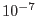

| Parameter | Mand | Type | Default | Constraints |
| imageset | yes | filename | image.fits | |
Name of EPIC FITS image
|
| attitudeset | yes | filename | attitude.fits | |
Name of attitude file
|
| eventset | yes | filename | events.fits | |
Event file, providing bad pixel and exposure extensions
|
| expimageset | yes | list of filenames | expimage.fits | |
Name(s) of output exposure image(s)
|
| withdetcoords | no | boolean | false | |
If true, the exposure map will be output in detector coordinates.
In this case, the input image(s) have to be binned in detector coordinates DETX, DETY.
|
| withvignetting | no | boolean | true | |
If true, the exposure map will include vignetting
|
| usefastpixelization | no | boolean | true | |
If true, a speed increase
of up to a factor of two is achieved, at the cost of inaccurate exposure
values in border pixels
|
| attrebin | no | float | 4.0 | [0.0 param60.0] param60.0] |
Positional accuracy of attitude rebinning in
arcseconds. Changes in the attitude less than
attrebin are ignored when rebinning the attitude data. Set attrebin=0.020626481 (i.e.,  rad) or smaller to ensure that the output sky exposure map matches event lists.
|
| pimin | no | integer | 2000 | [0param30000] |
Lower PI energy boundaries of exposure images
|
| pimax | no | integer | 4500 | [0param30000] |
Upper PI energy boundaries of exposure images
|
| usedlimap | no | boolean | false | |
If true, use discarded line maps provided by epexposure
|
| Parameter | Mand | Type | Default | Constraints |